Osvětlovací a výškové stožáry do 40 m, 3D laserové dělení trubek
Společnost FOR ELV s.r.o. v Prostějově zajišťuje komplexní strojírenskou výrobu: certifikované stožáry veřejného osvětlení a fotbalových stadionů, prostorové tvarové dělení trubek a profilů ve třech osách a přesné pálení plechů na laserech TRUMPF.
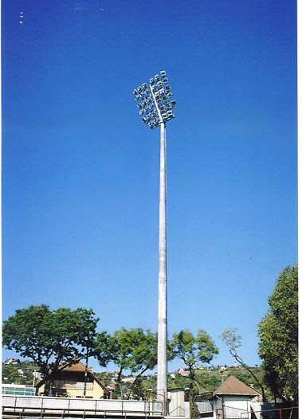
Certifikované stožáry pro osvětlení, stadiony i dopravu
Každý produkt je ověřen statickým výpočtem a zkouškou, tzv. zatěžovací hodnoty jsou certifikované. Stožáry jsou žárově zinkovány dle ČSN EN ISO 1461 pro maximální životnost v agresivním prostředí.
Osvětlovací stožáry do 20 m
Kompletní sortiment pro veřejné osvětlení měst, obcí, průmyslových zón, parků i pěších bulvárů.
- Stožáry stupňovité: klasické robustní provedení s přírubou či vetknutím
- Stožáry kuželové: elegantní plynulý kónus pro moderní komunikace
- Sadové a dekorační: estetické stožáry pro náměstí a parky
- Statika a zkoušky: certifikovaná zatížení dle norem ČSN
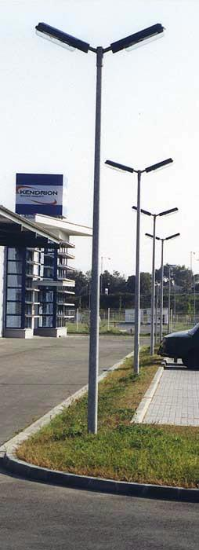
Výškové stožáry 20–40 m
Náročné konstrukce pro sportovní stadiony, železniční koridory, dálniční křižovatky a překladiště.
- Fotbalové stadiony: dimenzováno na vysokou zátěž těžkých LED svítidel
- Stožáry s pevným výložníkem: pro plošné osvětlení velkých areálů
- Větrná odolnost: podrobné statické výpočty větrných poryvů
- Žárové zinkování: ochrana vnějšího i vnitřního povrchu dle EN ISO 1461
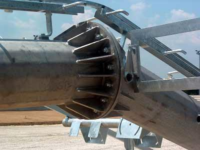
Speciální stožáry a sloupy
Individuální projektování a výroba nosných prvků pro infrastrukturu a firemní prezentaci.
- Trakční stožáry: pro městskou hromadnou dopravu a dráhy
- Vlajkové stožáry: pro administrativní centra a showroomy
- Betonové stožáry: speciální patice a upevňovací koše
- Příslušenství: výložníky, stupadla, plošiny a kotevní materiál
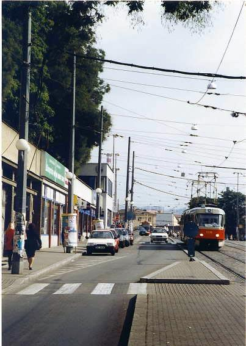
3D tvarové dělení trubek ve 3 osách a laser TRUMPF
Představujeme unikátní technologii prostorového řezání trubek a profilů pro mostní a střešní konstrukce. Stroji postačí zadat osové schéma a prostorový průnik bude přesně vypálen laserem.
3D tvarové dělení trubek a profilů
Určeno především pro mostní nosníky, střešní příhradové vazníky a prostorové ocelové konstrukce. Značně zjednodušuje montáž – dělené prvky do sebe na stavbě přesně zapadají bez nutnosti dodatečného lícování.
| Technický parametr | Reálná hodnota |
|---|---|
| Počet řízených os | 3 prostorové osy |
| Přesnost řezu | ±0,2 mm |
| Max. průměr obrobku | do 414 mm (415 mm) |
| Max. tloušťka stěny trubky | až 15 mm |
| Délka řezu | 3 000 mm |
| Délka obrobku | max. 9 m |
| Hmotnost obrobku | max. 200 kg |
| Podporované profily | Kruhové trubky, jekly, profily HE, IE, U, T |
| Speciální možnosti | Pálení přes hranu, vkládání výpalků zpět |
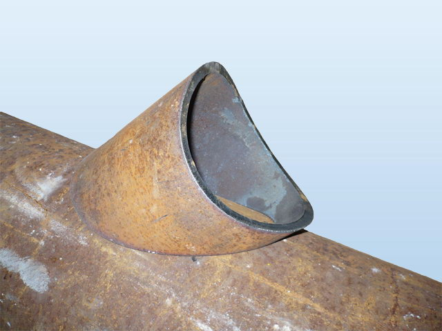
Pálení plechů laserem TRUMPF
Vysoce produktivní metoda dělení materiálu zaručující precizní rozměry a kolmost řezné hrany. Plně nahrazuje nákladné frézování či vysekávání plechů i u tvarově velmi složitých výpalků.
| Materiál | Max. tloušťka dělení |
|---|---|
| Konstrukční ocel (Fe) | do 20 mm |
| Nerezové oceli (Fe-Cr) | do 12 mm |
| Hliník a slitiny (Al) | do 8 mm |
| Max. velikost plechu | 1 500 × 3 000 mm |
| Speciální jakosti | Pérová ocel 14 260, rotorové plechy |
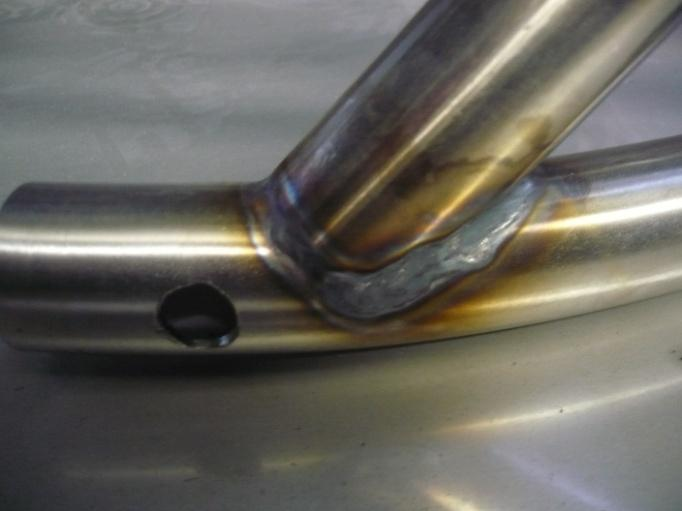
Ohraňování CNC HAP 30120, stříhání, stáčení a svařování
Zajišťujeme kompletní zpracování plechu od technického výkresu až po finální montáž a povrchovou úpravu dle požadavků odběratele.
Ohraňovací lis CNC HAP 30120
- Lisovací síla: 120 tun
- Pracovní délka: 3 050 mm
- Řízené osy: 4 osy CNC
- Max. tloušťka materiálu: 6 mm
Stříhání a dělení plechu
- Stříhání plechu do tl.: 3 mm
- Max. střižná délka: 2 500 mm
- Čistý řez bez otřepů
- Vysoká rychlost přípravy přířezů
Stáčení plechů a trubek
- Ohýbání trubek: do Ø 60 mm
- Stáčení plechu do tl.: 3 mm
- Max. délka stáčení: 1 000 mm
- Např. nerezové válce a rámy pecí
Svařování & povrchové úpravy
- Svařování MIG pro konstrukční ocel
- Svařování TIG pro Fe-Cr (nerez)
- Svařování mědi (Cu) a hliníku (Al)
- Broušení, zinkování nebo lakování
Reálné výrobky ze zakázkové výroby FOR ELV
Naše výrobní kapacity pokrývají široké spektrum strojírenských odvětví:
Oficiální technické katalogy stožárů FOR ELV
Stáhněte si kompletní katalogy s rozměrovými výkresy, tabulkami zatížení a montážními detaily pro projektanty a investory.
Katalog – osvětlovací stožáry
Kompletní specifikace stupňovitých, kuželových, sadových a dekoračních stožárů do 20 m. Rozměrové tabulky, parametry dříků a přírub.
Stáhnout Katalog 1 (PDF)Katalog – speciální stožáry
Výškové stožáry 20–40 m pro fotbalové stadiony, stožáry s pevným výložníkem, trakční a vlajkové sloupy se statickými atesty.
Stáhnout Katalog 2 (PDF)Fotogalerie z výroby a referenčních staveb
Prohlédněte si reálné snímky z naší výroby v Prostějově, hotových stadionových stožárů i prostorových řezů trubek.
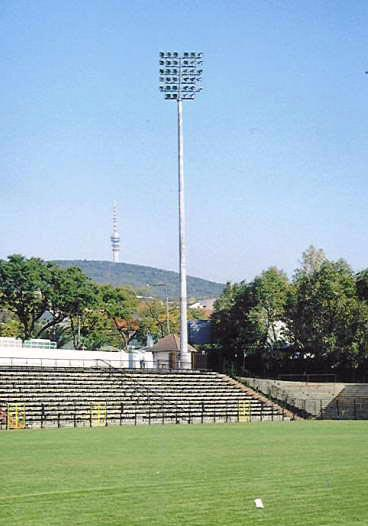
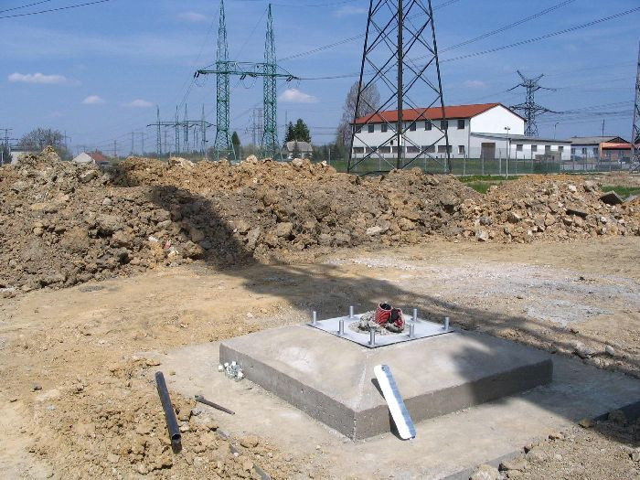
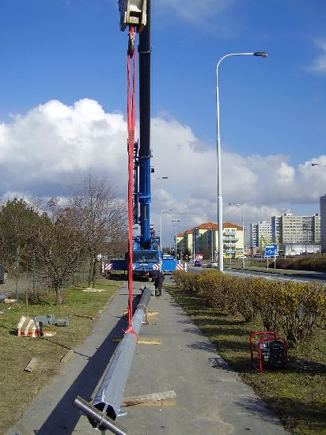
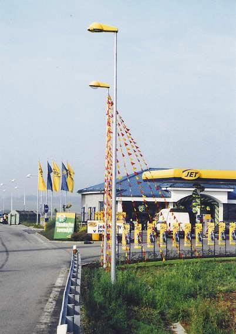
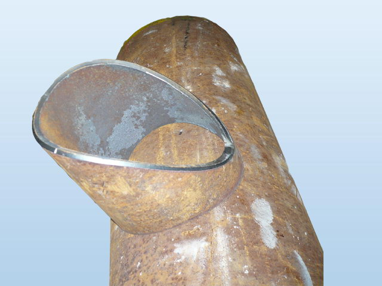
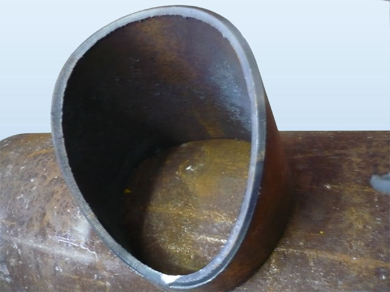
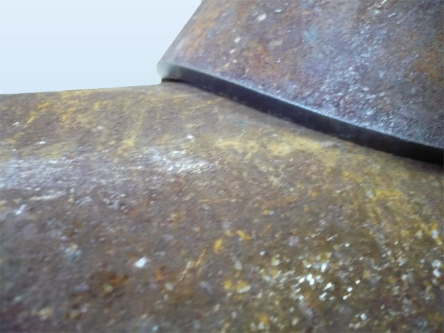
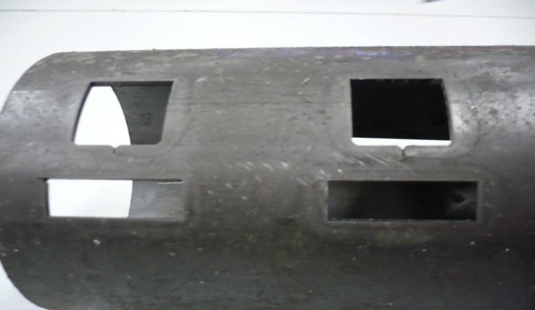
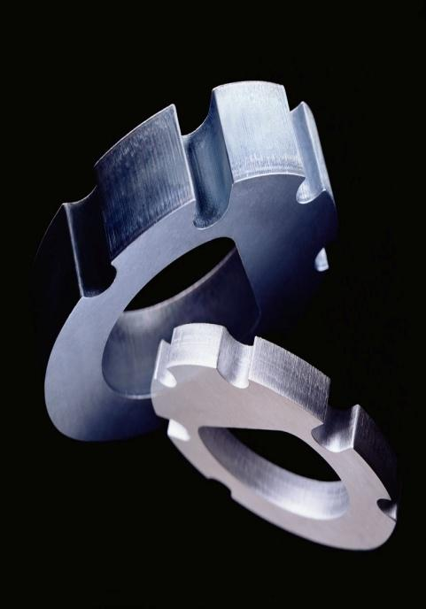
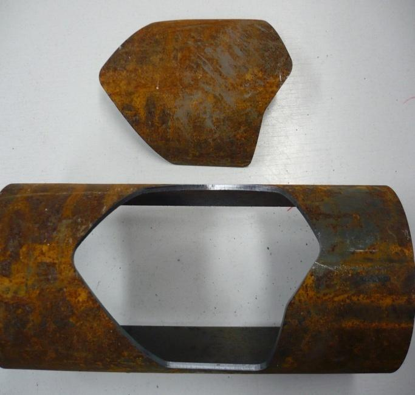
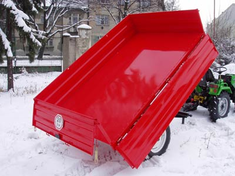
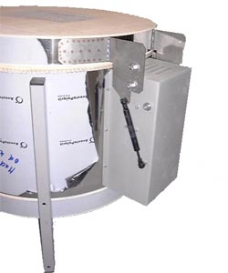
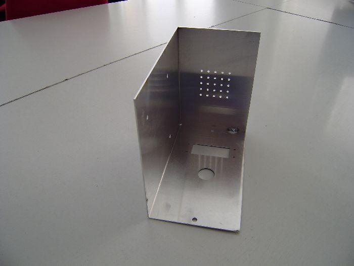
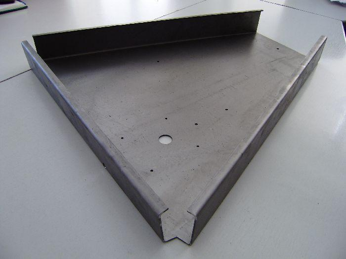
Zadejte parametry své zakázky
Formulář automaticky předvyplní specifikaci a nasměruje poptávku přímo k odpovědnému specialistovi naší výroby:
Kontaktní informace FOR ELV s.r.o.
Výrobní areál se nachází v Prostějově s přímým napojením na dálniční síť D46 pro pohodlnou kamionovou expedici stožárů i výpalků.
Fakturační a sídelní údaje
05228042
Kopírovat
CZ05228042